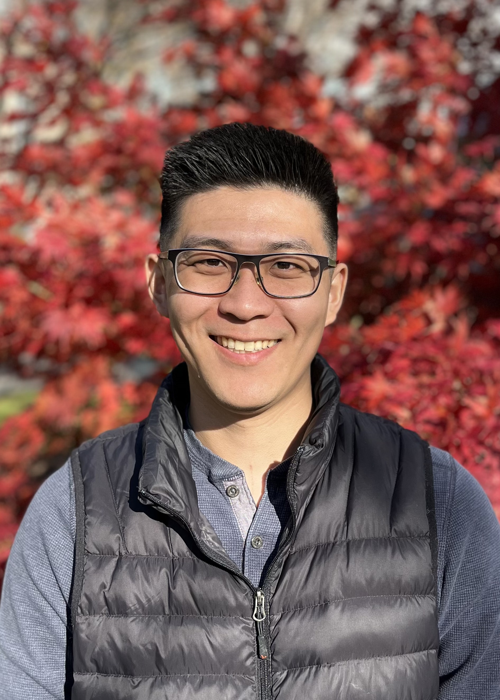

B.S. Applied Mathematics, Seattle University
Ph.D. Applied Mathematics, University of Delaware

I am an Assistant Professor of Mathematics (tenure track) at Swarthmore College in the Department of Mathematics & Statistics. My research interests lie broadly in numerical analysis and scientific computing, with an emphasis on solving high-dimensional partial differential equations in fluid and kinetic dynamics. Recently, I have been interested in Fokker-Planck type equations that appear in plasma physics and Langevin dynamics. I strongly believe in interdisciplinary work between mathematicians, scientists and engineers, and I encourage my students to view their research through multiple perspectives.
In addition to my research, I currently serve as the Eastern Pennsylvania district liaison for the New York-New Jersey-Pennsylvania Section of SIAM, and have been a conference organizer for the annual section meeting since 2024. I was on the editorial board for MAA FOCUS, the newsmagazine for the Mathematical Association of America, from 2023-2026. And I was on the board of directors for Spectra, the association for LGBTQ+ mathematicians, from 2021-2024.
Current Research Students (2026-2027 academic year)